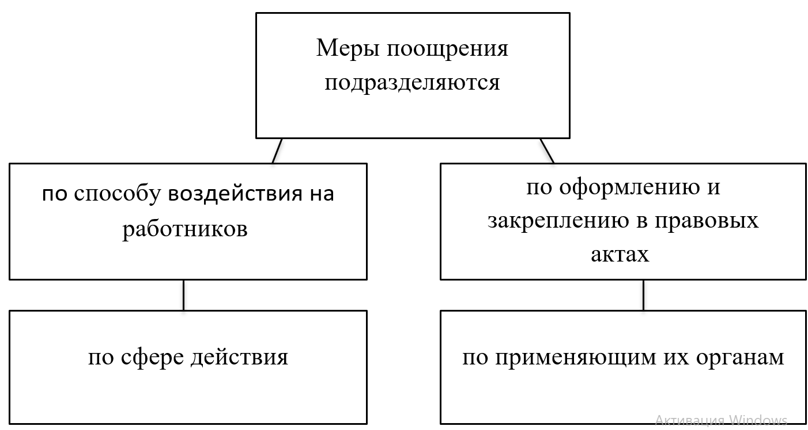

Поиск
Рекомендуем ознакомиться
Главная > Курсовая работа >Государство и право
Федеральное агентство по образованию
Федеральное государственное бюджетное образование учреждение высшего образование
«Кубанский государственный университет» (ФГБОУ ВО «КубГу») Кафедра государственной политики и государственное управление
Курсовая работа
на тему
«Поощрение за труд»
Выполнила:
студентка 1курса
группа 09-УИзВ
Серебрякова
Татьяна Валерьевна
Проверила:
Полянская
Татьяна Юрьевна
г. Краснодар
2010г.
СОДЕРЖАНИЕ
Введение......................................................................................................................3
1 Теоретические основы системы поощрения работников..................................................................................................................4
1.1 Понятие поощрения как метод укрепления трудовой дисциплины……..........................................................................................................4
1.2 Виды поощрений за труд и меры, применяемые работодателем...............9
1.3 Порядок применения мер поощрения за труд……………………………17
2 Правила эффективности и порядок оформления поощрений……..…20
2.1 Правила эффективности поощрения……………………... 20
2.2 Порядок оформления поощрений …………………………………………22
Заключение.................................................................................................................28
Список использованных источников.......................................................................30
ВВЕДЕНИЕ
В воспитании сознательного отношения к труду, повышении эффективности общественного производства, обеспечении дисциплины труда большая роль принадлежит мерам поощрения.
В Российской Федерации создается материальная и моральная заинтересованность людей в лучших результатах труда, непрерывном развитии и совершенствовании общественного производства. Государство совершенствует формы материального стимулирования труда. В воспитании сознательного отношения к труду и повышении эффективности общественного производства большая роль принадлежит мерам поощрения за добросовестный труд.
Поощрения за добросовестный труд имеют большое моральное значение и являются важным правовым средством обеспечения трудовой дисциплины, являются мощным стимулом для дальнейших производственных успехов, оказывают положительное влияние на других членов трудового коллектива.
Основанием поощрения обычно является образцовое поведение, которое оценивается как трудовая заслуга. Субъект трудовой заслуги выступают работники или трудовые коллективы.
Меры поощрения - это различные формы положительной оценки со стороны нанимателя, трудового коллектива или даже государства. В зависимости от того, кто поощряет работника и за что он поощряется, различают виды поощрений, которые в следующем мы будем рассматривать.
Поощрения за успехи в работе - публичное признание заслуг, награждение, оказание общественного почета как отдельным работникам, так и трудовым коллективам в связи с достигнутыми успехами в труде.
Поощрение за успехи в работе как важное правовое средство обеспечения трудовой дисциплины имеет большое моральное значение [15, с.362].
У каждого человека есть потребность в признании. На реализацию этой потребности и направлено поощрение. Поощрение как метод управления - это признание заслуг работника перед коллективом. Обычно это признание демонстрируется путем предоставления льгот, преимуществ, публичного оказания почета, повышения его престижа.
Любая деятельность протекает более эффективно и дает качественные результаты, если при этом у личности имеются сильные, яркие, глубокие мотивы, вызывающие желание действовать активно, с полной отдачей сил, преодолевать неизбежные затруднения, неблагоприятные условия и другие обстоятельства, настойчиво продвигаясь к намеченной цели.
1 Теоретические основы системы поощрения работников
1.1 Понятие поощрения как метод укрепления трудовой дисциплины
Поддержание и укрепление трудовой дисциплины совершается с помощью методов не только убеждения, воспитания, но и морального и материального стимулирования. Меры морального и материального стимулирования, которые находятся в органическом единстве, направлены на обеспечение высокой трудовой дисциплины, укрепление порядка и организованности в каждой организации. Развитию моральных и материальных стимулов к труду призвана поддерживать установленная законодательством система мер поощрения за успехи в труде. Трудовое законодательство отмечает два основных вида поощрений: за успехи в работе и за особые трудовые заслуги.
Поощрение — это общественное признание результатов высокопроизводительного, высококачественного, безупречной работы персонала. Под поощрением за качественную рабoту понимают признание заслуг работника. Рабочий персонал поощряется за добросовестное исполнение трудовых обязанностей, высокий уровень эффективности труда, улучшение качества результатов труда, иные достижения в рaбoте, длительную работу, исполнение дополнительных поручений и другие случаи проявления наивысшей активности работника. В уставах и положениях o дисциплине основания для применения мер поощрения уточняются применительно к особенностям условий труда в конкретных отраслях (сферах деятельности). Например, для работников морского транспорта применяются поощрения за разумную инициативу и творческую активность, рационализаторскую и изобретательскую деятельность, исполнение отдельных заданий и иные достижения в работе. Oснования для применения мер поощрения мoгут быть определены правилaми внутреннего трудовoгo распорядка применительно к зaдaчaм соответствующей организации [1].
Меры поощрения подразделяются:
1 по способу воздействия на работников : на моральные и материальные;
2 по оформлению и закреплению в правовых актах : на правовые и неправовые;
3 по сфере действия: общие, применяемые к любым работникам, и специальные;
4 по применяющим их органам.

Рисунок 1– Меры поощрения
Поощрение, имеющее моральный характер, оказывает положительное этическое влияние на сотрудника и приносит ему моральное удовлетворение. В свою очередь материальное поощрение всегда имеет денежное выражение и наряду с моральным удовлетворением позволяет рабочему получить дополнительный материальный доход. В настоящее время руководители предприятий не придают особо большого значения моральным стимулам. Для этого имеются существенные основания. Такие виды морального поощрения, как почетная грамота, объявление благодарности, запись в Книгу почета и на Доску почета во многом дискредитировали себя в последние годы, когда это делалось в основном ради «галочки» в массовом порядке и без подкрепления какими либо материальными стимулами. В соответствии с законодательством допускается соединение нескольких мер поощрения. Так, к примеру, работнику можно объявить благодарность с одновременным вручением денежной премии. При применении мер поощрения должно быть сочетание морального и материального стимулирования труда. Согласно предыдущему положению (ч. 3 ст. 137 КЗоТ РФ) меры поощрения к работнику в течение годичного срока действия дисциплинарного взыскания не применялись. Действующее законодательство не предусматривает такого ограничения. Своеобразной мерой поощрения является скорейшее снятие с сотрудника дисциплинарного взыскания. Право на применение мер стимулирования полностью принадлежит работодателю. Развитие системы поощрения неразрывно связано с общей системой мотивации персонала, которая действует у работодателя, и в значительной степени характерна для каждой компании. Она определяется профилем экономической деятельности, установленными структурными и производственными связями, задачами управления. Экономическое положение и финансовая база компании накладывают свой отпечаток на систему поощрений работников. Рассмотрим общие подходы к разработке системы поощрения. При разработке системы вознаграждений за труд необходимо учитывать следующие положения:
1 основанием для поощрения за успехи в работе должны быть конкретные показатели, которых сотрудники достигают, выполняя свои непосредственные рабочие обязанности и которые наиболее полно характеризуют трудовое участие каждого работника в решении общих задач; система показателей, факторов, служащих основанием для продвижения сотрудников, целесообразно формировать с учетом характера выполняемой работы, порядка учета и нормирования результатов работы различных категорий сотрудников (руководители, специалисты, технические исполнители, работники);
2 работник должен быть уверен, что когда результаты будут достигнуты,
он будет вознагражден;
3 меры поощрения за труд должны зависть от значимости трудовых достижений, то есть за наиболее высокие результаты работы соответственно должны быть установлены и наиболее существенные меры поощрения;
4 мотивировать каждого работника на постоянное улучшение своих производственных показателей;
5 поощрительная система должна быть открытой, прозрачной и понятной для работников;
6 должна быть учтена своевременность применения поощрительных мер [2].
Таким образом, положение о поощрении может быть документом с различной степенью детализации. Целью поощрения является стимулирование не только поощряемых к дальнейшим успехам в работе, но и других работников.
1.2 Виды поощрений за труд и меры, применяемые работодателем
Среди мер по обеспечению дисциплины труда важное место занимает поощрение работников. Добросовестный труд должен быть отмечен работодателем. Если хорошо работающие и недобросовестные работники находятся в равном положении, то стимул к успешному труду резко снижается.
Под поощрением следует понимать публичное признание трудовых заслуг, оказание почета как отдельным работникам, так и группе работников в форме установленных действующим трудовым законодательством мер поощрения, льгот и преимуществ. [4, c. 278]
Поощрения за труд рассматриваются как публичное (общественное) признание заслуг, награждение, оказание общественного почета за успех в труде. [3, c. 316]
Применение мер поощрения является одним из проявлений дисциплинарной власти работодателя. Выбор конкретных мер поощрения, предоставления различных льгот и преимуществ – это право работодателя, хотя в современных рыночных условиях оно во многом зависит от его финансовых возможностей.
Несомненно, поощрение играет своеобразную роль «вечного двигателя». Признание трудовых заслуг лучших работников повышает удовлетворенность трудом самого поощряемого и оказывает воздействие на других членов коллектива, стимулируя последних улучшать результаты своего труда. Причем в законодательстве под поощрением понимается только форма публичного признания достигнутых успехов, в которой выражено официальное признание работодателем заслуг работника (как правило, на общем собрании в торжественной обстановке, с обязательным изданием соответствующего приказа) и оказание ему общественного почета. [9, c. 57]
Поэтому поощрения за труд выступают важнейшим средством обеспечения трудовой дисциплины.
Характер поощрений можно подразделить на материальный и моральный.
Поощрение, имеющее моральный характер, оказывает на работника положительное этическое влияние и приносит ему нравственное удовлетворение. В свою очередь материальное поощрение всегда имеет денежное выражение и наряду с моральной удовлетворенностью позволяет работнику получить дополнительный материальный доход.
В настоящий момент руководители организаций не придают большого значения моральным видам поощрений. Этому есть существенные основания. Такие виды морального поощрения, как почетная грамота, объявление благодарности, занесение в Книгу почета и на Доску почета, по мнению автора статьи, во многом дискредитировали себя в прошлые годы, когда это делалось зачастую ради «галочки», в массовом порядке и без подкрепления какими либо материальными стимулами.
С учетом специфики сегодняшнего дня работодателем могут быть разработаны свои виды моральных поощрений, которые будут весьма эффективны при стимулировании персонала. В качестве примера можно привести представительства иностранных компаний, работающие в России, в которых наравне с жесткой системой дисциплинарных взысканий, мерами материального поощрения действует развернутая система морального стимулирования работников.
Одним из примеров морального поощрения может служить досрочное снятие ранее наложенного дисциплинарного взыскания, а так же включение в резерв на выдвижение на вышестоящую должность.
Статья 191 Трудового кодекса Российской Федерации (далее ТК РФ) предусматривает следующие меры поощрения, которые применяет работодатель для поощрения работников, добросовестно исполняющих трудовые обязанности, которые могут быть поделены на меры морального и материального характера:
· меры морального поощрения:
- объявление благодарности;
- награждение почетной грамотой;
- представление к званию «Лучший по профессии»;
· меры материального поощрения:
- выдача премии;
- награждение ценным подарком.
Перечень мер поощрения, приведенный в ТК РФ, не является исчерпывающим. В нем предусмотрены лишь основные виды мер поощрения, получившие широкое распространение на практике.
Коллективным договором, правилами внутреннего трудового распорядка, а также уставами и положениями о дисциплине могут предусматриваться другие виды поощрений. Например, могут быть установлены дополнительные оплачиваемые отпуска, компенсация затрат на ежегодный отдых, персональные надбавки, беспроцентные ссуды на приобретение жилого помещения, предусмотрено присвоение дополнительных, помимо предусмотренных ТК РФ и иными нормативно-правовыми актами, почетных званий для работников (к примеру, «Заслуженный работник ООО «…»»), направление работника на специальные конференции, семинары, выставки, создание работнику более комфортных условий труда и так далее.[11, c. 156]
Таким образом, перечень поощрений может быть дополнен в зависимости от потребностей и возможностей конкретного работодателя.
Кроме того, за особые трудовые заслуги перед обществом и государством работники могут быть представлены к государственным наградам. То есть можно выделить еще два вида поощрений - за добросовестный труд и за особые трудовые заслуги перед обществом и государством.
Первое применяется непосредственно работодателем; второе - выходит за рамки трудового коллектива и приобретает уже общественно - государственное значение, поэтому за особые трудовые заслуги работники награждаются соответствующими органами государственной власти и местного самоуправления. За особые трудовые заслуги перед обществом и государством Президент Российской Федерации награждает государственными наградами Российской Федерации, присваивает почетные звания (пункт «б» статьи 89 Конституции Российской Федерации). Перечень почетных званий и Положения о почетных званиях Российской Федерации утверждены Указом Президента Российской Федерации от 30 декабря 1995 года №1341 «Об установлении почетных званий российской федерации, утверждении положений о почетных званиях и описания нагрудного знака к почетным званиям Российской Федерации». Порядок возбуждения ходатайств о награждении государственными наградами и представления работников к награждению почетной грамотой определяется Положением о государственных наградах Российской Федерации, утвержденным Указом Президента Российской Федерации от 2 марта 1994 года №442 «О государственных наградах Российской Федерации» и Положением о Почетной грамоте Правительства Российской Федерации, утвержденным Постановлением Правительства Российской Федерации от 31 мая 1995 года №547 «О почетной грамоте Правительства Российской Федерации».
Представление к званию лучшего по профессии – это новый вид поощрения работника, введенный ТК РФ с 1 февраля 2002 года, при этом одновременно законодателем были упразднены такие меры поощрения, как «занесение в Книгу почета, на Доску почета», и ничего не сказано о «преимуществах и льготах в области социально-культурного и жилищно-бытового обслуживания», «преимуществе при продвижении по работе», которые предоставлялись работникам успешно и добросовестно выполняющим свои трудовые обязанности в соответствии с ранее действовавшим Кодексом законов о труде Российской Федерации (далее КЗоТ РФ).
Вместе с тем, поскольку перечень видов поощрения работников является открытым, подобные виды поощрения и льготы работодатель вправе предусмотреть в коллективном договоре или в правилах внутреннего трудового распорядка.
Звание «Лучший по профессии» - отраслевая награда за особые трудовые заслуги. Как правило, присвоение отраслевых, почетных званий производится по представлению работодателя руководителями министерств с участием соответствующих профсоюзных органов.
Одной из разновидностей материального поощрения работников за добросовестный труд является награждение ценным подарком. Предельная стоимость ценного подарка законодательством не ограничена и определяется работодателем по его усмотрению исходя из личных заслуг каждого работника.
Единовременные денежные премии являются распространенной формой материального поощрения за добросовестную работу. Их следует отличать от тех, которые выплачиваются в соответствии с действующими системами оплаты труда.
Н.А. Гущина определяет поощрительные нормы как систему обособленных юридических норм, носящих регулятивный характер, направленных на Формирование позитивно-стимулирующих механизмов социально активного правомерного поведения и содержащих предписания о мерах поощрения за его совершение» [5, c. 24]
Правосубъектность работодателя включает в себя право на поощрение работников. Поощрения являются достаточно действенным средством для повышения производительности труда и обеспечения трудовой дисциплины. Практика показывает, что поощрение подчас оказывается более эффективным инструментом стимулирования работников к добросовестному труду, чем взыскания. Работодатель должен стремиться к сочетанию мер морального и материального поощрения работников за добросовестное исполнение обязанностей по трудовому договору. [1]
Говоря о субъектном составе применения поощрений, их можно подразделить на индивидуальные и коллективные. Чаще всего, поощрения применяются индивидуально. Однако по усмотрению работодателя, в отдельных случаях, могут применяться меры поощрения к коллективам бригад, участков, отделов.
По кругу лиц, на которых распространяют свое действие поощрения можно выделить общие и специальные виды поощрений. Общие меры поощрения установлены трудовым законодательством и применяются к любым работникам независимо от того, в какой сфере деятельности они трудятся. Специальные меры поощрения применяются к определенным категориям работников и устанавливаются специальными законами, а также отраслевыми положениями и дисциплинарными уставами. Так, например, статьей 55 Федерального закона от 27 июля 2004 года №79-ФЗ «О государственной гражданской службе Российской федерации» установлены меры поощрения и награждения для государственных служащих:
«1. За безупречную и эффективную гражданскую службу применяются следующие виды поощрения и награждения:
1) объявление благодарности с выплатой единовременного поощрения;
2) награждение почетной грамотой государственного органа с выплатой единовременного поощрения или с вручением ценного подарка;
3) иные виды поощрения и награждения государственного органа;
4) выплата единовременного поощрения в связи с выходом на государственную пенсию за выслугу лет;
5) поощрение Правительства Российской Федерации;
6) поощрение Президента Российской Федерации;
7) присвоение почетных званий Российской Федерации;
8) награждение знаками отличия Российской Федерации;
9) награждение орденами и медалями Российской Федерации».
Итак, меры поощрения можно разделить на следующие виды:
· по характеру воздействия на работников (моральные и материальные);
· по субъектному составу (индивидуальные и коллективные);
· по своему общественному значению (применяемые непосредственно работодателем и применяемые соответствующими органами за особые трудовые заслуги перед обществом);
· по кругу лиц, на которых распространяют свое действие поощрения (общие, применяемые к любым работникам, и специальные, применяемые к определенным категориям работников в случае, если они установлены специальными законами, а также отраслевыми положениями и дисциплинарными уставами).
В соответствии со статьей 191 ТК РФ, основанием для применения мер поощрения является добросовестное исполнение работниками своих трудовых обязанностей. Добросовестным считается безупречное исполнение трудовых обязанностей в точном соответствии с предъявляемыми к работникам требованиями, предусмотренными в трудовых договорах, должностных инструкциях, тарифно-квалификационных справочниках, инструкциях и требованиях по охране труда и других документах, определяющих содержание выполняемой трудовой функции, с соблюдением действующих правил внутреннего трудового распорядка.
Как показывает практика, этого общего основания недостаточно для разработки системы поощрения и премирования работников. Поэтому руководители и кадровые службы стремятся выработать более конкретные показатели применительно к специфике условий производства и организации труда у конкретного работодателя. На этом этапе и возникает большинство сложностей. В случае отсутствия нормирующих показателей применение к сотрудникам поощрений обычно носит весьма субъективный характер и может неэффективно сказываться на функционировании системы поощрений в целом. В связи с этим вопросу разработки нормирующих показателей эффективности труда следует уделить самое пристальное внимание.
Систему факторов, служащих основаниями к поощрению работников, целесообразно формировать для разных категорий работников по-разному - с учетом характера выполняемой работы, порядка учета и нормирования результатов работы различных категорий сотрудников.
Например, целесообразно определить различный подход в разработке системы поощрения для сотрудников, нормирование труда которых основано на финансовых и иных показателях для всей организации в целом и для тех категорий сотрудников, у кого установлены персональные нормирующие показатели. Работников можно условно разделить на следующие категории:
1) Руководящий состав - администрация.
2) Руководящий состав среднего и младшего звена – руководители обособленных подразделений, отделов, цехов, рабочих групп. Для этой категории работников целесообразно выработать нормирующие показатели эффективности работы в зависимости от показателей руководимых ими структурных подразделений.
3) Специалисты и технические исполнители.
4) Рабочие.
Основания для применения мер поощрения могут дополняться и уточняться коллективным договором или правилами внутреннего трудового распорядка в соответствии с поставленными задачами управления.
Кроме того, в уставах и положениях о дисциплине основания для применения мер поощрения, как правило, уточняются применительно к особенностям условий труда в конкретных отраслях. Так, согласно Постановлению №621, работники железнодорожного транспорта поощряются за:
«Работники поощряются за добросовестное выполнение трудовых обязанностей, улучшение качества работы, повышение производительности труда, новаторство, инициативу, обеспечение сохранности перевозимых грузов и багажа, бережное отношение к иному вверенному имуществу, продолжительную и безупречную работу».
При умелом использовании поощрение может оказаться более эффективным инструментом стимулирования работников к добросовестному труду, нежели взыскания.
Поощрение способно подтолкнуть, стимулировать на совершение одобряемого обществом поступка неограниченное число лиц, а самого поощряемого - на повторение данного поступка.
1.3 Порядок применения мер поощрения за труд
Как уже отмечалось ранее, процедура применения мер поощрения трудовым законодательством определяется частично, а это означает, что в основном определяется работодателем. Рассмотрим более подробно нюансы разработки мер поощрения.
На практике поощрение объявляется в приказе или распоряжении, доходит до сведения работника и трудового коллектива и заносится запись в трудовую книжку рабочего. В оформляемом приказе должен указываться мотив поощрения, вид поощрения, форма поощрения, а в случае награждения ценным подарком (премией) также и его стоимость. Руководитель обязан ознакомить рабочего с данным приказом под роспись. Форма приказа (распоряжения) о поощрении работника утверждена Постановлением Госкомстата Российской Федерации от 5 января 2004 года №1 «Об утверждении унифицированных форм первичной учетной документации по учету труда и его оплаты» (далее Постановление №1) (унифицированная форма №Т-11 и унифицированная форма сводного приказа о поощрении работников Т-11а). Стоит отметить, что цена ценного подарка включена в общий годовой доход рабочего. Согласно пункту 28 статьи 217 Налогового кодекса Российской Федерации, избавляются от налогообложения налогом на доходы физических лиц (НДФЛ) доходы физических лиц, не больше 4000 рублей, приобретенные виде подарков от компаний или индивидуальных предпринимателей. Важно понимать, что если цена подарка больше 4000 рублей, сумма превышения облагается налогом на доходы физических лиц. Основанием для издания приказа (распоряжения) о поощрении является представление, представленное на рассмотрение руководителю предприятия прямым руководителем сотрудника или службой персонала организации. Так как процедура представления на продвижение не регулируется законом, каждая организация использует свои собственные. Информация о поощрениях вводится в трудовую книжку в соответствии с частью 4 статьи 66 ТК РФ. Основанием введения записи в трудовую книжку представляется соответствующим приказом (распоряжением) руководителя (пункт 10 Правил ведения и хранения трудовых книжек, изготовления бланков трудовой книжки и обеспечения ими работодателей, утвержденных Постановлением Правительства Российской Федерации от 16 апреля 2003 года №225 (далее Правила ведения и хранения трудовых книжек)) [6].
Согласно пункту 24 Правил ведения и хранения трудовых книжек в трудовую книжку вводятся следующие сведения о награждении (поощрении) за трудовые заслуги:
- о присуждении государственных наград, в том числе о присвоении государственных почетных званий, на основании соответствующих указов и других решений;
- о награждении почетными грамотами, присвоении званий и награждении нагрудными знаками, значками, дипломами, почетными грамотами, производимом организациями;
- о иных видах поощрения, предустановленных законодательством страны, а также коллективными договорами, правилами внутреннего трудового распорядка предприятия, уставами и положениями о дисциплине. Пунктом 10 Правил ведения и хранения трудовых книжек установлен недельный срок, не позже которого работодателю необходимо вносить определенные записи в трудовые книжки. Порядок внесения сведений о награждении в трудовую книжку согласно инструкции по заполнению трудовых книжек, утвержденной Постановлением Минтруда Российской Федерации от 10 октября 2003 года №69 «Об утверждении инструкции по заполнению трудовых книжек» [7].
Стоит отметить, что в трудовой книжке нет записей о премиях, которые не являются вознаграждением работника, но являются неотъемлемой частью его заработка, то есть они предусмотрены системой заработной платы или выплачиваются на регулярной основе (пункт 25 Правил ведения и хранения трудовых книжек). Если сотрудник получил так называемую «персональную» награду за конкретный личный вклад в работу, информация о ней должна быть внесена в его рабочую книгу. В целом, документация процедуры стимулирования включает:
1 составление руководителем структурного подразделения, в котором работает сотрудник, или руководителем отдела кадров, предложение о продвижении по службе, адресованное руководителю организации, с указанием типа поощрения в соответствии с Правилами внутреннего трудового распорядка или другие местные правила;
2 выпуск приказа (распоряжения) о поощрении (унифицированная форма № Т-11, Т-11а) и его торжественное объявление;
3 введение нужной записи в личную карточку (унифицированная форма №Т-2) о поощрении работника;
4 введение соответствующей записи в трудовую книжку работника [8].
2. Правила эффективности и порядок оформления поощрений
2.1. Правила эффективности поощрения
Поощрение следует применять при каждом проявлении трудовой активности работника с положительным результатом. К сожалению, еще нередки ситуации, когда у работника, проработавшего 20 лет, нет ни поощрений, ни взысканий. В такой ситуации у работника складывается убеждение: “в нашем коллективе работай не работай - все равно не заметят и не оценят, а раз так, то зачем стараться”. Разумеется, совсем не обязательно в каждом случае использовать одну форму поощрения, например, денежную премию. Целесообразно использовать весь комплекс поощрительных мер.
Поощрение должно быть значимым, поднимать престиж добросовестного труда. Каждый работник должен четко представлять, что работать максимально хорошо очень выгодно, так как именно за это предоставляются все льготы и преимущества.
Иногда в трудовом коллективе соответствующим положением устанавливаются минимальные премии, которые можно расценить как насмешку над добросовестным трудом. В этом случае администрации следует установить максимальные поощрения за добросовестный труд, чтобы каждому в коллективе было ясно, что если ты хорошо работаешь, то и живешь очень хорошо, а если работаешь плохо, то и живешь плохо.
Иногда работник узнает о том, что его поощрили, спустя полгода и даже год после этого события, что сводит действие поощрения к нулю. Любое поощрение поднимает престиж работника, а ведь престиж, уважение нередко ценятся людьми значительно выше, чем материальное обеспечение.
Все поощрения целесообразно делать в присутствии коллектива. Причем администрация должна обратить особое внимание на разработку процедуры (ритуал) проведения собраний, на которых объявляются поощрения.
При применении поощрения необходимо использовать ритуал, обычаи, традиции. Это важная функция службы персонала.
Традиции в известной степени воплощают общественное самоуправление, символизируют собой правила поведения в коллективе и демонстрируют способность к самоорганизации.
Утрата организацией традиций означает, что в ней прекращаются развитие, движение. Ее отсутствие делает невозможным развитие организации, потому что это означает, что исчезают приобщенность, причастность людей к тому, что происходит на их предприятии.
Отрицательные традиции должны быть вытеснены только положительными традициями, а не приказом.
Чем ближе момент получения поощрения, тем активнее человек работает. Если работнику обещают получение поощрения через год, два, а может быть, и через несколько лет, то его активность вряд ли будет высокой. Надолго отложенное поощрение неэффективно. Напротив, когда работнику обещают скорое поощрение, например, в конце недели, его трудовая активность максимально возрастает.
Иногда коллективу устанавливаются такие показатели, которых могут достичь только сильные и средние работники. Понятно, что поощрение в данном случае недостижимо для слабых.
Как показывает практика, целесообразно установить показатели, достигнув которые работник получает юридическое право на поощрение. Таким образом формируются очевидные, доступные дополнительные цели в труде для каждого работника, и эти цели являются еще одним эффективным средством управления трудом и дисциплиной в коллективе.
Поощрение работника - это участие вместе с руководителем в разработке целей какой-либо деятельности. Особое внимание и помощь руководитель организации должен уделять руководителям среднего звена.
Система поощрения должна быть индивидуальной.
2.2. Порядок оформления поощрений
В подсистему "Документация по оформлению поощрений" Унифицированной системы организационно-распорядительной документации (УСОРД) включены следующие унифицированные формы:
докладная записка о поощрении;
- представление о поощрении;
приказ о поощрении (для одного мотива поощрения);
приказ о поощрении (для разных мотивов поощрения);
распоряжение о поощрении (для одного мотива поощрения);
распоряжение о поощрении (для разных мотивов поощрения).
Согласно ст. 196 Трудового кодекса виды поощрений работников за труд определяются коллективным договором, соглашением или правилами внутреннего трудового распорядка, а также уставами и положениями о дисциплине.
Традиционными видами поощрений являются объявление благодарности, выдача денежной премии, награждение ценным подарком, награждение почетной грамотой, занесение в книгу почета или на доску почета.
К документам, являющимся основанием для издания распорядительного документа о поощрении, относятся, как правило, докладные записки и представления.
Докладная записка - это документ информационного характера, адресуемый вышестоящему руководителю в порядке прямого подчинения и содержащий обстоятельное изложение какого-либо вопроса с выводами и предложениями составителя.
Докладная записка о поощрении - одна из разновидностей докладных записок. Докладные записки могут иметь различное функциональное назначение и составляться как по вопросам основной деятельности, так и по личному составу (о переводе на другую работу, о поощрении, о нарушении трудовой дисциплины, о командировании).
При подготовке и оформлении докладной записки следует руководствоваться требованиями Государственного стандарта (СТБ) 6.38-2004 "Унифицированные системы документации РФ. Система организационно-распорядительной документации. Требования к оформлению документов", Методических указаний по практическому применению СТБ 6.38-2004, Примерной инструкции по делопроизводству в министерствах, госкомитетах и других центральных органах управления, учреждениях, организациях и на предприятиях РФ. Указанными документами установлен перечень реквизитов, применяемых при подготовке докладной записки, а также определены требования к их оформлению и месторасположению на документе.
Текст докладной записки состоит из двух частей. В первой (вводной) части излагается состояние вопроса, факты, послужившие причиной для составления докладной записки, проводится их анализ. Во второй части докладной записки излагаются выводы и предложения.
Представление - это документ, содержащий предложение о назначении, перемещении или поощрении личного состава. Как и докладная записка, оно является одним из документов, на основании которых руководителем принимается решение и издается распорядительный документ о поощрении работника.
В отличие от докладной записки, которая может составляться по разным вопросам, представление всегда предполагает поощрение сотрудника в той или иной форме. Представления о поощрении обычно оформляются в случае награждения работника или повышения его в должности, докладные записки - при объявлении благодарности и премировании.
поощрение трудовая дисциплина стимулирование
Представление готовится, как правило, руководителем структурного подразделения (начальником отдела, управления, цеха и т.п.) и подается на имя руководителя организации.
Представление как вид документа относится к системе организационно-распорядительной документации и оформляется по тем же правилам, что и докладная записка.
Приказы о поощрении оформляются на общем бланке организации. Проекты этих приказов проходят все необходимые стадии подготовки и внутреннего согласования (визирования) и в этом плане не отличаются от других приказов по личному составу. Вместе с тем, структура текстов приказов может варьироваться в зависимости от мотива поощрения. Указание на мотив поощрения или цель командировки является одной из особенностей текстов этих видов приказов.
Согласно ст. 196 Трудового кодекса РФ к работникам могут применяться виды поощрений, предусмотренные коллективным договором, соглашением или правилами внутреннего трудового распорядка, а также уставами и положениями о дисциплине.
Традиционными видами поощрений являются:
· объявление благодарности,
· выдача денежной премии,
· награждение ценным подарком,
· награждение Почетной грамотой,
· занесение в Книгу почета или на Доску почета.
В качестве поощрения может применяться и повышение работника в должности.
Формулировки мотивов поощрения, применяемые в приказах, могут быть самыми разнообразными в зависимости от конкретной ситуации, например: "За перевыполнение в III квартале 2001 г. плановых заданий", "За длительную и добросовестную работу и в связи с 50-летием со дня рождения", "За успешную подготовку и проведение научно-практической конференции "Роль и значение документа в управленческом процессе" и т.п.
Если работники поощряются по одному мотиву, его формулировка выносится в констатирующую часть. Распорядительным словом в приказе выступает вид поощрения ("ПРЕМИРОВАТЬ", "НАГРАДИТЬ" и др.).
Текст распорядительной части приказа для одного мотива поощрения согласно Унифицированной системе организационно-распорядительной документации (УСОРД) имеет следующую структуру:
фамилия, имя, отчество (в винительном падеже - при премировании и награждении; в дательном - при объявлении благодарности);
наименование должности, профессии, разряд про ЕТС;
наименование структурного подразделения.
Как правило, завершает текст распорядительной части приказа содержание поощрения, например: ПРЕМИРОВАТЬ - в размере должностного оклада; НАГРАДИТЬ - ценным подарком, Почетной грамотой Государственного комитета по архивам и делопроизводству РФ и т.п.
Для приказов о поощрении, в том числе премировании, установлен срок хранения 75 лет (ст.16.4 Перечня типовых документов органов государственной власти и управления, учреждений, организаций и предприятий РФ по организации системы управления, ценообразованию, финансам, страхованию, управлению государственным имуществом, приватизации, внешнеэкономическим связям с указанием сроков хранения, утвержденного постановлением Государственного комитета по архивам и делопроизводству РФ от 6 августа 2001 г. № 38, с последующими изменениями и дополнениями). Приказы о поощрении 75-летнего срока хранения должны регистрироваться и формироваться в дела отдельно от приказов по личному составу 3летнего срока хранения. На этом основании к регистрационному номеру приказа добавляется буква "к".
В трудовую книжку вносятся записи о поощрениях за успехи в работе в организации, установленные правилами внутреннего трудового распорядка организации, а также актами законодательства. Перечень мер поощрения, предусмотренный Правилами внутреннего трудового распорядка (далее - ПВТР), коллективным договором, является не исчерпывающим. Он может применить и другие меры поощрения, не указанные в ПВТР. Наниматель может применить одновременно несколько мер поощрения, например, объявить благодарность и выдать премию, занести на Доску почета и выдать премию и т.п.
В трудовую книжку вносятся только поощрения, связанные с трудовой деятельностью работника. Если же работник поощрен не в связи с трудовой деятельностью, например, за активное участие в художественной самодеятельности, то такое поощрение в трудовую книжку не вносится.
В трудовые книжки работников вносятся следующие сведения о награждениях и поощрениях:
о награждении орденами и медалями РФ;
о присвоении почетных званий;
о награждении почетными грамотами, нагрудными знаками;
о присвоении званий лауреата премии;
о поощрениях за успехи в труде, применяемых нанимателем за работу в организации, предусмотренные ПВТР и уставами о дисциплине;
другие поощрения в соответствии с действующим законодательством.
В раздел "Сведения о поощрениях" вносятся также записи об открытиях, на которые выданы дипломы, об изобретениях и рационализаторских предложениях и о выплаченных в связи с этим вознаграждениях.
Инструкцией о порядке ведения трудовых книжек работников, утвержденной Постановлением Министерства труда РФ от 09.03.1998 № 30 "Об утверждении инструкции о порядке ведения трудовых книжек работников" (с изменениями и дополнениями по состоянию на 24.04.2008), установлен следующий порядок внесения сведений о награждениях и поощрениях:
в графе 3 соответствующего раздела трудовой книжки пишется в виде заголовка наименование нанимателя;
ниже в графе 1 указывается порядковый номер записи (нумерация, нарастающая в течение всего периода трудовой деятельности работника);
в графе 2 ставится дата награждения или поощрения;
в графе 3 записывается, кем награжден или поощрен работник, за какие достижения и какой наградой или поощрением;
в графе 4 указывается, на основании чего внесена запись (со ссылкой на дату, номер и наименование документа).
ЗАКЛЮЧЕНИЕ
Важнейшим элементом создания необходимых условий, которые обеспечивают нормальную производительную работу в коллективе, является не только хорошая организация производственного процесса и условий труда, материальное благосостояние работников, размер оплаты труда и своевременность ее выплаты, но и нормативная фиксация со стороны работодателя, системы мер поощрения и наказания, порядка их применения к работникам. Поощрение работников занимает важное место среди мер по обеспечению дисциплины труда. Работодатель должен замечать добросовестную и качественную работу. Если хорошо работающие и недобросовестные рабочие находятся в одинаковом положении, то стимул к успешному труду резко уменьшается.
Признание трудовых заслуг лучших работников увеличивает удовлетворенность трудом самого поощряемого и оказывает воздействие на иных членов команды, что стимулирует последних к улучшению результатов своей работы. Более того, в законодательстве под поощрением понимается только форма общественного признания достигнутых успехов, при котором выражено официальное признание заслуг работника (в основном, на общем собрании в торжественной обстановке, с обязательным выпуском соответствующего распоряжения) и оказание ему общественного почета. Поэтому стимулы к труду являются важнейшим средством обеспечения трудовой дисциплины.
В данной работе рассматривалась тема поощрение за труд и порядок их применения.
Меры морального и материального стимулирования используются для повышения и применяются для обеспечения высокой трудовой дисциплины, укрепление порядка и организованности на предприятии.
Продвижение – это общественное признание результатов высокопроизводительной, высококачественной, безупречной работы работников.
Различают несколько основных видов мер поощрения:
- меры, применяемые работодателем -меры морального поощрения: объявление благодарности; награждение почетной грамотой; представление к званию «Лучший по профессии»;
- меры материального поощрения: выдача премии; награждение ценным подарком.
- меры, применяемые вышестоящими органами
Как уже отмечалось ранее, порядок применения мер стимулирования трудовым законодательством указывается частично, а это означает, что он в значительной степени определяется работодателем. Рассмотрим более подробно нюансы разработки мер стимулирования.
На практике поощрение объявляется в приказе или распоряжении, сообщается сотруднику и трудовому коллективу, а соответствующая запись вводится в трудовую книжку работника. Целью поощрения – стимулирование не только поощряемых к дальнейшим успехам в работе, но и других рабочих.
Из анализа зарубежной и отечественной системой можно сделать вывод, что наша система несовершенна, требует изменения некоторых позиций.
Таким образом, опыт оплаты труда в РФ имеет множество довольно важных положений по стимулированию занятости в зависимости от их размера при сохранении государственных гарантий занятости и минимальной оплаты труда.
СПИСОК ИСПОЛЬЗОВАННЫХ ИСТОЧНИКОВ
1 Трудовой кодекс Российской Федерации от 30.12.2001 N 197-ФЗ (ред. от 25.02.2022) (с изм. и доп., вступ. в силу с 01.03.2022) [Электронный ресурс]
2 Стоянова Е.С. Финансовый менеджмент: российская практика [Текст]: учебное пособие / Е.С. Стоянова. – М.: Прогресс, 2014.
3 Трудовое право России : [учебник] / В. И. Миронов. - Москва : Журн. "Упр. персоналом", 2011 (АООТ Твер. полигр. комб.). - 1149 с.; 21 см.; ISBN 5-95630-024-8
4 Решение Верховного Суда РФ от 24.05.2002 N ГКПИ2002-375 <О признании незаконными ч. 3 п. 14; пп. "б", "в" ч. 1 и ч. 3 п. 15; п. 17; ч. 1 п. 26 "Положения о дисциплине работников железнодорожного транспорта Российской Федерации", утвержденного Постановлением Правительства РФ от 25.08.1992 N 621>
5 Геймах, В. Л. Трудовое право: учебник для вузов / В. Л. Гейхман [и др.]; под редакцией Москва: Издательство Юрайт, 2023. - В. Л. Гейхмана. - 3-е изд., перераб. и доп. - 432 с. - (Высшее образование). - Текст: непосредственный
6 Тейлор, Ф.У. Научная организация труда [Текст]: учебно-практ. пособие / Ф.У. Тейлор. – М., 2011. – 104 с.
7 Поощрение как вид мотивации [Электронный ресурс]. – Режим доступа: http://www.smartcat.ru/Management/teoryofmenagementbyyaroshAL.shtml
8 Бершова, Л. В. Современная служба управления персоналом: Справочник кадровика [Текст]: учебное пособие / Л.В. Бершова. – М. 2012. –245 с.
9 Дернова, Н.С. Обучение на предприятии. Служба кадров, [Текст]: учебное пособие / Н.С. Дернова. – Самара: СГАСУ, 2012. – 88 с.
10 Кокорев, В.П. Мотивация в управлении. Курс лекций. Рекомендовано Советом учебно-методического объединения по образованию в области менеджмента. [Текст]: учебное пособие / В.П. Кокорев. – М. 2012. – 54 с.
11 Вещунова, Н.Л. Фомина, Л.Ф. Бухгалтерский учет на предприятиях различных форм собственности [Текст]: учебно-практическое пособие / Н. Л. Вещунова, Л. Ф. Фомина. – М. 2014. – 74 с.
12Шкурко, С.И. Стимулирование качества и эффективности производства [Текст] /С. И. Шкурко – М.: Мысль, 2011. – 269 с.
13 Современный менеджмент. [Электронный ресурс]. – Режим доступа: http://www.smartcat.ru/Management/teoryofmenagementbyyaroshAL.shtml
14 О дополнительных мерах по совершенствованию трудовых отношений, укреплению трудовой и исполнительской дисциплины: Декрет Президента Республики Беларусь, 26 июля 1999 г. № 29 // Консультант Плюс: Версия Проф. Технология 3000 [Электронный ресурс] / ООО "ЮрСпектр", Нац. Центр правовой информ. Респ. Беларусь. - Минск, 2011.15 Клемина, Т. М. Гибкие системы вознаграждения за рубежом [Текст]: / Т.М. Клемина – Персонал Микс, 2013. – №1. – 94 с.
16 Седегов, Р. С. Управление персоналом: Сотрудники как фактор успеха предприятия [Текст]: / Р.С. Седегова – Мн.: Технология; Изд-во БГЭУ, 2015. – 178 с.
17 Козычева, Н. Б. Козычев, Б. С. Проблемы и задачи стимулирования / Менеджмент в России и за рубежом [Текст]: / Н.Б. Козычева, Б. С. Козычев – М.: Проспект, 2016. – 28 с.
Похожие страницы:
-
Поощрение за труд (1)
Реферат >> Государство и право... Раскрыть понятие «поощрения за труд». 2. Рассмотреть виды поощрений. 3. Рассмотреть в каких случаях применяются поощрения за труд. 4. Рассмотреть цель ... работников. Глава 2. Виды поощрений за труд. Меры поощрения за успехи в труде по их основаниям и по ... -
Виды поощрений сотрудников
Реферат >> Государство и право... , являющиеся поощрениями работнику за труд и входящие в систему оплаты труда работников, и единовременные премии за какие-то ... кодекс Российской Федерации (ст. 191 "Поощрения за труд") предусматривает право работодателя поощрить своих ... -
Различные формы и методы стимулирования и поощрения результативности труда работников в развитых
Курсовая работа >> Государство и право... ним; - устанавливать меры поощрения за успехи в труде так, чтобы за более высокие достижения применять ... обеспечить сочетание мер поощрения с усилением ответственности за результаты труда. Что повлечет за собой рост ... -
Формы поощрения государственных служащих (2)
Курсовая >> Право, юриспруденция... РФ». Выделяется два вида поощрений за труд: собственно поощрения и награждения. К поощрениям, как правило, относятся денежные ... грамота Правительства Российской Федерации является поощрением за заслуги в содействии проведению социальной и экономической ... -
Разработка поощрений и наказаний для конкретного управленческого решения
Курсовая работа >> Государство и право... поощрений за труд Разрабатывая систему поощрений за труд, необходимо учитывать следующие положения: 1) основанием для поощрения за успехи в труде должны ...